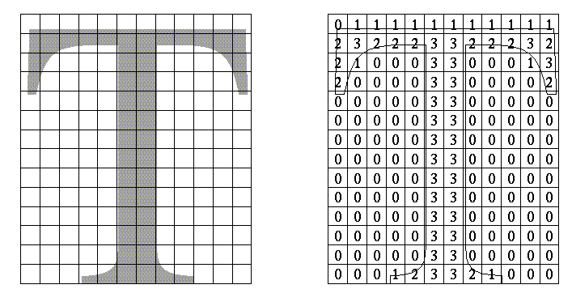
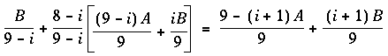
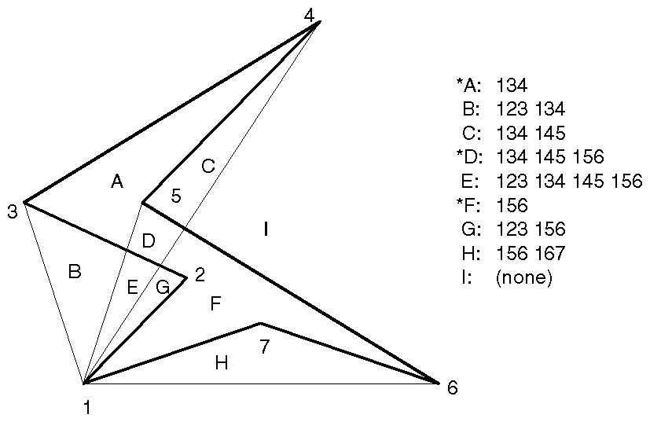
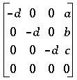
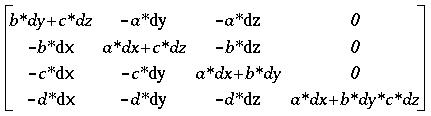
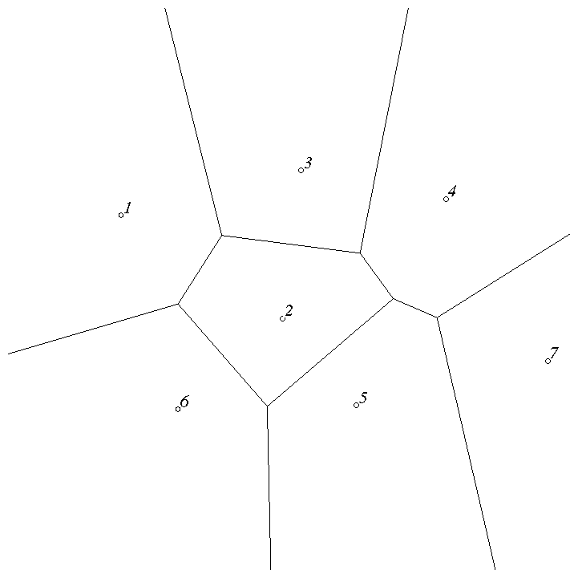
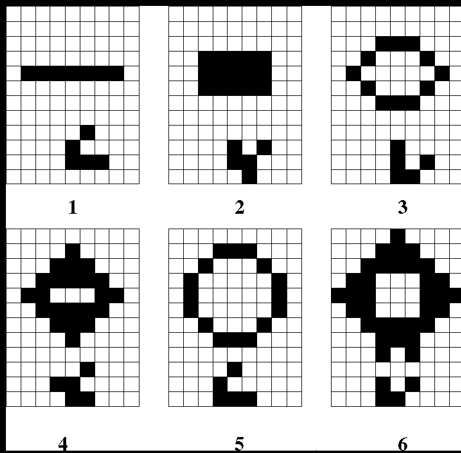

This chapter doesn't have objectives in the same way that previous chapters do. It's simply a collection of topics that describe ideas you might find useful for your application.
OpenGL is kind of a bag of low-level tools; now that you know about those tools, you can use them to implement higher-level functions. This chapter presents several examples of such higher-level capabilities.
This chapter discusses a variety of techniques based on OpenGL commands that illustrate some of the not-so-obvious uses to which you can put these commands. The examples are in no particular order and aren't related to each other. The idea is to read the section headings and skip to the examples that you find interesting. For your convenience, the headings are listed and explained briefly here.
Most of the examples in the rest of this guide are complete and can be compiled and run as is. In this chapter, however, there are no complete programs, and you have to do a bit of work on your own to make them run.
"An Easy Fade Effect" shows how to use polygon stippling to create the
effect of a fade into the background.
"Object Selection Using the Back Buffer" describes how to use the back
buffer in a double-buffered system to handle simple object picking.
"Cheap Image Transformation" discusses how to draw a distorted version
of a bitmapped image by drawing each pixel as a quadrilateral.
"Displaying Layers" explains how to display multiple different layers
of materials and indicate where the materials overlap.
"Antialiased Characters" describes how to draw smoother fonts.
"Drawing Round Points" describes how to draw near-round points.
"Interpolating Images" shows how to smoothly blend from one image to
the another.
"Making Decals" explains how to draw two images, where one is a sort
of decal that should always appear on top of the other.
"Drawing Filled, Concave Polygons Using the Stencil Buffer" tells you
how to draw concave polygons, nonsimple polygons, and polygons with holes
by using the stencil buffer.
"Finding Interference Regions" describes how to determine where three-dimensional
pieces overlap.
"Shadows" describes how to draw shadows of lit objects.
"Hidden-Line Removal" discusses how to draw a wireframe object with
hidden lines removed by using the stencil buffer.
"Texture-Mapping Applications" describes several clever uses for texture
mapping, such as rotating and warping images.
"Drawing Depth-Buffered Images" tells you how to combine images in a
depth-buffered environment.
"Dirichlet Domains" explains how to find the Dirichlet domain of a set
of points using the depth buffer.
"Life in the Stencil Buffer" explains how to implement the Game of Life
using the stencil buffer.
"Alternative Uses for glDrawPixels() and glCopyPixels()" describes how to use these two commands for such effects as fake video, airbrushing, and transposed images.
If you don't like the effect with random pixels turned on, you can use regular patterns, but they don't work as well when transparent surfaces are stacked. This is often not a problem because most scenes have relatively few translucent regions that overlap. In a picture of an automobile with translucent windows, your line of sight can go through at most two windows, and usually it's only one.
GLubyte stips[16][4*32];Then load them in such a way that each has one-sixteenth of the pixels in a 32x32 stipple pattern turned on. After that, the following code does the trick:
draw_the_picture();
glColor3f(0.0, 0.0, 0.0); /* set color to black */
for (i = 0; i < 16; i++) {
glPolygonStipple(&stips[i][0]);
draw_a_polygon_large_enough_to_cover_the_whole_region();
}
In some OpenGL implementations, you might get better performance by first
compiling the stipple patterns into display lists. During your initialization,
do something like this:
#define STIP_OFFSET 100
for (i = 0; i < 16; i++) {
glNewList(i+STIP_OFFSET, GL_COMPILE);
glPolygonStipple(&stips[i][0]);
glEndList();
}
Then, replace this line in the first code fragment
glPolygonStipple(&stips[i][0]);with
glCallList(i);By compiling the command to set the stipple into a display list, OpenGL might be able to rearrange the data in the stips[ ][ ] array into the hardware-specific form required for maximum stipple-setting speed.
Another application for this technique is if you're drawing a changing picture, and you want to leave some blur behind that gradually fades out to give some indication of past motion. For example, suppose you're simulating a planetary system, and you want to leave trails on the planets to show a recent portion of their path. Again, assuming you want to fade in sixteen steps, set up the stipple patterns as before (using the display-list version, say), and have the main simulation loop look something like this:
current_stipple = 0;
while (1) { /* loop forever */
draw_the_next_frame();
glCallList(current_stipple++);
if (current_stipple == 16) current_stipple = 0;
glColor3f(0.0, 0.0, 0.0); /* set color to black */
draw_a_polygon_large_enough_to_cover_the_whole_region();
}
Each time through the loop, you clear one-sixteenth of the pixels. Any
pixel that hasn't had a planet on it for sixteen frames is certain to be
cleared to black. Of course, if your system supports blending in hardware,
it's easier to blend in a certain amount of background color with each
frame.
See "Displaying Points, Lines, and Polygons" for polygon stippling details, Chapter 4, "Display Lists," for more information about display lists, and "Blending" for information about blending.
One way to do this requires your application to be running in double-buffer mode. When the user picks an object, the application redraws the entire scene in the back buffer, but instead of using the normal colors for objects, it encodes some kind of object identifier for each object's color. The application then simply reads back the pixel under the cursor, and the value of that pixel encodes the number of the picked object.
Note that this scheme has an advantage over standard selection in that it picks the object that's in front, if multiple objects appear at the same pixel, one behind the other. Since the image with false colors is drawn in the back buffer, the user never sees it; you can redraw the back buffer (or copy it from the front buffer) before swapping the buffers. In color-index mode, the encoding is simple - send the object identifier as the index. In RGBA mode, encode the bits of the identifier into the R, G, and B components.
Be aware that you can run out of identifiers if there are too many objects in the scene. For example, suppose you're running in color-index mode on a system that has 4-bit buffers for color-index information (sixteen possible different indices) in each of the color buffers, but the scene has thousands of pickable items. To address this issue, the picking can be done in a few passes. For definiteness, assume there are fewer than 4096 items, so all the object identifiers can be encoded in 12 bits. In the first pass, draw the scene using indices composed of the 4 high-order bits, then use the second and third passes to draw the middle 4 bits and the 4 low-order bits. After each pass, read the pixel under the cursor, extract the bits, and pack them together at the end to get the object identifier.
With this method, the picking takes three times as long, but that's often acceptable. Note that after you have the high-order 4 bits, you eliminate fifteen of the sixteen possible objects, so you really only need to draw one-sixteenth of them for the second pass. Similarly, after the second pass, 255 of the 256 possible items have been eliminated. The first pass thus takes about as long as drawing a single frame does, but the second and third passes can be up to 16 and 256 times as fast.
If you're trying to write portable code that works on different systems, break up your object identifiers into chunks that fit on the lowest common denominator of those systems. Also, keep in mind that your system might perform automatic dithering in RGB mode. If this is the case, turn off dithering.
To make the problem more concrete, assume that the original image is m pixels by n pixels, with coordinates chosen from [0, m-1] × [0, n-1]. Let the distortion functions be x(m,n) and y(m,n). For example, if the distortion is simply a zooming by a factor of 3.2, then x(m,n) = 3.2*m and y(m,n) = 3.2*n. The following code draws the distorted image:
glShadeModel(GL_FLAT);
glScale(3.2, 3.2, 1.0);
for (j=0; j < n; j++) {
glBegin(GL_QUAD_STRIP);
for (i=0; i <= m; i++) {
glVertex2i(i,j);
glVertex2i(i, j+1);
set_color(i,j);
}
glEnd();
}
This code draws each transformed pixel in a solid color equal to that pixel's
color and scales the image size by 3.2. The routine set_color()
stands for whatever the appropriate OpenGL command is to set the color
of the image pixel.
The following is a slightly more complex version that distorts the image using the functions x(i,j) and y(i,j):
glShadeModel(GL_FLAT);
for (j=0; j < n; j++) {
glBegin(GL_QUAD_STRIP);
for (i=0; i <= m; i++) {
glVertex2i(x(i,j), y(i,j));
glVertex2i(x(i,j+1), y(i,j+1));
set_color(i,j);
}
glEnd();
}
An even better distorted image can be drawn with the following code:
glShadeModel(GL_SMOOTH);
for (j=0; j < (n-1); j++) {
glBegin(GL_QUAD_STRIP);
for (i=0; i < m; i++) {
set_color(i,j);
glVertex2i(x(i,j), y(i,j));
set_color(i,j+1);
glVertex2i(x(i,j+1), y(i,j+1));
}
glEnd();
}
This code smoothly interpolates color across each quadrilateral. Note that
this version produces one fewer quadrilateral in each dimension than do
the flat-shaded versions because the color image is being used to specify
colors at the quadrilateral vertices. In addition, you can antialias the
polygons with the appropriate blending function (GL_SRC_ALPHA, GL_ONE)
to get an even nicer image.
As a simple example, suppose you have three different substances that can be layered. At any point, eight possible combinations of layers can occur, as shown in Table 13-1 .
|
|
Layer 1 | Layer 2 | Layer 3 | Color |
|---|---|---|---|---|
| 0 | absent | absent | absent | black |
| 1 | present | absent | absent | red |
| 2 | absent | present | absent | green |
| 3 | present | present | absent | blue |
| 4 | absent | absent | present | pink |
| 5 | present | absent | present | yellow |
| 6 | absent | present | present | white |
| 7 | present | present | present | gray |
You want your program to display eight different colors, depending on the layers present. One arbitrary possibility is shown in the last column of the table. To use this method, use color-index mode and load your color map so that entry 0 is black, entry 1 is red, entry 2 is green, and so on. Note that if the numbers from 0 through 7 are written in binary, the 4 bit is turned on whenever layer 3 appears, the 2 bit whenever layer 2 appears, and the 1 bit whenever layer 1 appears.
To clear the window, set the writemask to 7 (all three layers) and set the clearing color to 0. To draw your image, set the color to 7, and then when you want to draw something in layer n, set the writemask to n. In other types of applications, it might be necessary to selectively erase in a layer, in which case you would use the same writemasks as above, but set the color to 0 instead of 7.
See "Masking Buffers" for more information about writemasks.
Assuming that you're drawing black characters on a white background, imagine a highly magnified picture of the pixels on the screen, with a high-resolution character outline superimposed on it, as shown in the left side of Figure 13-1 .

Figure 13-1 : Antialiased Characters
Notice that some of the pixels are completely enclosed by the character's outline and should be painted black; some pixels are completely outside the outline and should be painted white; but many pixels should ideally be painted some shade of gray, where the darkness of the gray corresponds to the amount of black in the pixel. If this technique is used, the resulting image on the screen looks better.
If speed and memory usage are of no concern, each character can be drawn as a small image instead of as a bitmap. If you're using RGBA mode, however, this method might require up to 32 bits per pixel of the character to be stored and drawn, instead of the one bit per pixel in a standard character. Alternatively, you could use one 8-bit index per pixel and convert these indices to RGBA by table lookup during transfer. In many cases, a compromise is possible that allows you to draw the character with a few gray levels between black and white (say, two or three), and the resulting font description requires only 2 or 3 bits per pixel of storage.
The numbers in the right side of Figure 13-1 indicate the approximate percentage coverage of each pixel: 0 means approximately empty, 1 means approximately one-third coverage, 2 means two-thirds, and 3 means completely covered. If pixels labeled 0 are painted white, pixels labeled 3 are painted black, and pixels labeled 1 and 2 are painted one-third and two-thirds black, respectively, the resulting character looks quite good. Only 2 bits are required to store the numbers 0, 1, 2, and 3, so for 2 bits per pixel, four levels of gray can be saved.
There are basically two methods to implement antialiased characters, depending on whether you're in RGBA mode.
In RGBA mode, define three different character bitmaps, corresponding to where 1, 2, and 3 appear in Figure 13-1 . Set the color to white and clear for the background. Set the color to one-third gray (RGB = (0.666, 0.666, 0.666)) and draw all the pixels with a 1 in them. Then set RGB = (0.333, 0.333, 0.333), draw with the 2 bitmap, and use RGB = (0.0, 0.0, 0.0) for the 3 bitmap. What you're doing is defining three different fonts, and redrawing the string three times, where each pass fills in the bits of the appropriate color densities.
In color-index mode, you can do exactly the same thing, but if you're willing to set up the color map correctly and use writemasks, you can get away with only two bitmaps per character and two passes per string. In the preceding example, set up one bitmap that has a 1 wherever 1 or 3 appears in the character. Set up a second bitmap that has a 1 wherever a 2 or a 3 appears. Load the color map so that 0 gives white, 1 gives light gray, 2 gives dark gray, and 3 gives black. Set the color to 3 (11 in binary) and the writemask to 1, and draw the first bitmap. Then change the writemask to 2, and draw the second. Where 0 appears in Figure 13-1 , nothing is drawn in the framebuffer. Where 1, 2, and 3 appear, 1, 2, and 3 appear in the framebuffer.
For this example with only four gray levels, the savings is small - two passes instead of three. If eight gray levels were used instead, the RGBA method would require seven passes, and the color-map masking technique would require only three. With sixteen gray levels, the comparison is fifteen passes to four passes.
See "Masking Buffers" for more information about writemasks and "Bitmaps and Fonts" for more information about drawing bitmaps.
See "Antialiasing" and "Blending" for more information about these topics.
The problem with this method is that both images must be drawn in each frame. A faster approach is to draw image A in frame 0. To get frame 1, blend in 1/9 of image B and 8/9 of what's there. For frame 2, blend in 1/8 of image B with 7/8 of what's there. For frame 3, blend in 1/7 of image B with 6/7 of what's there, and so on. For the last step, you're just drawing 1/1 of image B blended with 0/1 of what's left, yielding image B exactly.
To see that this works, if for frame i you have
![[IMAGE]](figures/eq1301.gif)
and you blend in B/(9-i) with (8-i)/(9-i) of what's there, you get

See "Blending."
Your first approach might be to draw B after you've drawn A, setting the depth-buffering function to replace on greater or equal. Due to the finite precision of the floating-point representations of the vertices, however, round-off error can cause polygon B to be sometimes a bit in front and sometimes a bit behind figure A. Here's one solution to this problem:
Enable the depth buffer for writing, and render B.
Disable the color buffer for writing, and render A again.
Enable the color buffer for writing.
If a stencil buffer is available, the following simpler technique works:
Configure the stencil buffer to make no stencil value change, but to render only where stencil values are 1. Disable the depth-buffer test and its update. Render B.
See "Selecting Color Buffers for Writing,""Depth Test," and "Stencil Test."

Figure 13-2 : A Concave Polygon
In the text of the figure, each of the region names is followed by a list of the triangles that cover it. Regions A, D, and F make up the original polygon; note that these three regions are covered by an odd number of triangles. Every other region is covered by an even number of triangles (possibly zero). Thus, to render the inside of the concave polygon, you just need to render regions that are enclosed by an odd number of triangles. This can be done using the stencil buffer, with a two-pass algorithm.
First, clear the stencil buffer and disable writing into the color buffer. Next, draw each of the triangles in turn, using the GL_INVERT function in the stencil buffer. This flips the value between zero and a nonzero value every time a triangle is drawn that covers a pixel. After all the triangles are drawn, if a pixel is covered an even number of times, the value in the stencil buffers is zero; otherwise, it's nonzero. Finally, draw a large polygon over the whole region (or redraw the triangles), but allow drawing only where the stencil buffer is nonzero.
There's a slight generalization of the preceding technique, where you don't need to start with a polygon vertex. In the 1234567 example, let P be any point on or off the polygon. Draw the triangles: P12, P23, P34, P45, P56, P67, and P71. Regions covered by an odd number of triangles are inside; other regions are outside. This is a generalization in that if P happens to be one of the polygon's edges, one of the triangles is empty.
This technique can be used to fill both nonsimple polygons (polygons whose edges cross each other) and polygons with holes. The following example illustrates how to handle a complicated polygon with two regions, one four-sided and one five-sided. Assume further that there's a triangular and a four-sided hole (it doesn't matter in which regions the holes lie). Let the two regions be abcd and efghi, and the holes jkl and mnop. Let z be any point on the plane. Draw the following triangles:
zab zbc zcd zda zef zfg zgh zhi zie zjk zkl zlj zmn zno zop zpm
Mark regions covered by an odd number of triangles as in, and those covered by an even number as out.
See "Stencil Test" for more information about the stencil buffer.
The method is related to the capping algorithm described in "Stencil Test." The idea is to pass an arbitrary clipping plane through the objects that you want to test for interference, and then determine when a portion of the clipping plane is inside more than one object at a time. For a static image, the clipping plane can be moved manually to highlight interfering regions; for a dynamic image, it might be easier to use a grid of clipping planes to search for all possible interferences.
Draw each of the objects you want to check and clip them against the clipping plane. Note which pixels are inside the object at that clipping plane using an odd-even count in the stencil buffer, as explained in the preceding section. (For properly formed objects, a point is inside the object if a ray drawn from that point to the eye intersects an odd number of surfaces of the object.) To find interferences, you need to find pixels in the framebuffer where the clipping plane is in the interior of two or more regions at once; in other words, in the intersection of the interiors of any pair of objects.
If multiple objects need to be tested for mutual intersection, store one bit every time some intersection appears, and another bit wherever the clipping buffer is inside any of the objects (the union of the objects' interiors). For each new object, determine its interior, find the intersection of that with the union of the interiors of the objects so far tested, and keep track of the intersection points. Then add the interior points of the new object to the union of the other objects' interiors.
You can perform the operations described in the preceding paragraph by using different bits in the stencil buffer together with various masking operations. Three bits of stencil buffer are required per pixel - one for the toggling to determine the interior of each object, one for the union of all interiors discovered so far, and one for the regions where interference has occurred so far. For concreteness, assume the 1 bit of the stencil buffer is for toggling interior/exterior, the 2 bit is the running union, and the 4 bit is for interferences so far. For each object that you're going to render, clear the 1 bit (using a stencil mask of 1 and clearing to 0), then toggle the 1 bit by keeping the stencil mask as 1 and using the GL_INVERT stencil operation.
You can find intersections and unions of the bits in the stencil buffers using the stenciling operations. For example, to make bits in buffer 2 be the union of the bits in buffers 1 and 2, mask the stencil to those two bits, and draw something over the entire object with the stencil function set to pass if anything nonzero occurs. This happens if the bits in buffer 1, buffer 2, or both are turned on. If the comparison succeeds, write a 1 in buffer 2. Also, make sure that drawing in the color buffer is disabled. An intersection calculation is similar - set the function to pass only if the value in the two buffers is equal to 3 (bits turned on in both buffers 1 and 2). Write the result into the correct buffer.
See "Additional Clipping Planes" and "Stencil Test."
As a simple illustration, assume the light is at the origin, and the equation of the ground plane is ax+by+c+d=0. Given a vertex S=(sx,sy,sz,1), the line from the light through S includes all points &agr; S, where &agr; is an arbitrary real number. The point where this line intersects the plane occurs when
&agr; (a*sz+b*sy+c*sz) + d = 0,
so
&agr; = -d/(a*sx+b*sy+c*sz).
Plugging this back into the line, we get:
-d(sx,sy,sz)/(a*sx+b*sy+c*sz)
for the point of intersection.
The matrix that maps S to this point for every S is

This matrix can be used if you first translate the world so that the light is at the origin.
If the light is from an infinite source, all you have is a point S and a direction D = (dx,dy,dz). Points along the line are given by
S + &agr; D
Proceeding as before, the intersection of this line with the plane is given by
a(sx+ &agr; dx)+b(sy+ &agr; dy)+c(sz+ &agr; dz)+d = 0
Solving for &agr; , plugging that back into the equation for a line, and then determining a projection matrix gives

This matrix works given the plane and an arbitrary direction vector. There's no need to translate anything first.
See Chapter 3, "Viewing," and Appendix G .
There's an easy, two-pass solution using the stencil buffer. For each polygon, clear the stencil buffer, and then draw the outline both in the framebuffer and in the stencil buffer. Then when you fill the interior, enable drawing only where the stencil buffer is still clear. To avoid doing an entire stencil-buffer clear for each polygon, an easy way to clear it is simply to draw 0s into the buffer using the same polygon outline. In this way, you need to clear the entire stencil buffer only once.
For example, the following code represents the inner loop you might use to perform such hidden-line removal. Each polygon is outlined in the foreground color, filled with the background color, and then outlined again in the foreground color. The stencil buffer is used to keep the fill color of each polygon from overwriting its outline. To optimize performance, the stencil and color parameters are changed only twice per loop by using the same values both times the polygon outline is drawn.
glEnable(GL_STENCIL_TEST);
glEnable(GL_DEPTH_TEST);
glClear(GL_STENCIL_BUFFER_BIT);
glStencilFunc(GL_ALWAYS, 0, 1);
glStencilOp(GL_INVERT, GL_INVERT, GL_INVERT);
set_color(foreground);
for (i=0; i < max; i++) {
outline_polygon(i);
set_color(background);
glStencilFunc(GL_EQUAL, 0, 1);
glStencilOp(GL_KEEP, GL_KEEP, GL_KEEP);
fill_polygon(i);
set_color(foreground);
glStencilFunc(GL_ALWAYS, 0, 1);
glStencilOp(GL_INVERT, GL_INVERT, GL_INVERT);
outline_polygon(i);
}
See "Stencil Test."
Antialiased lines - These can be done like antialiased text: Make the
line in the texture several pixels wide, and use the texture filtering
to antialias the lines.
Image scaling and rotation - If you put an image into a texture map
and use that texture to map onto a polygon, rotating and scaling the polygon
effectively rotates and scales the image.
Image warping - As in the preceding example, store the image as a texture
map, but map it to some spline-defined surface (use evaluators). As you
warp the surface, the image follows the warping.
Projecting images - Put the image in a texture map, and project it as a spotlight, creating a slide projector effect. See "The q Coordinate" for more information about how to model a spotlight using textures.
For example, if you're drawing a model of a molecule made of spheres, you might have an image of a beautifully rendered sphere and its associated depth-buffer values that were calculated using Phong shading or ray-tracing, or using some other scheme that isn't directly available through OpenGL. To draw a complex model, you might be required to draw hundreds of such spheres, which should be depth-buffered together.
To add a depth-buffered image to the scene, first draw the image's depth-buffer values into the depth buffer using glDrawPixels(). Then enable depth-buffering, set the writemask to zero so that no drawing occurs, and enable stenciling such that the stencil buffers get drawn whenever a write to the depth buffer occurs.
Then draw the image into the color buffer, masked by the stencil buffer you've just written so that writing occurs only when there's a 1 in the stencil buffer. During this write, set the stenciling function to zero out the stencil buffer so that it's automatically cleared when it's time to add the next image to the scene. If the objects are to be moved nearer to or farther from the viewer, you need to use an orthographic projection; in these cases, you use GL_DEPTH_BIAS with glPixelTransfer*() to move the depth image.
See "Hidden-Surface Removal Survival Kit,""Depth Test," see "Stencil Test," and see Chapter 8 for details on glDrawPixels() and glPixelTransfer*().

Figure 13-3 : Dirichlet Domains
If you draw a depth-buffered cone with its apex at the point in a different color than each of the points in S, the Dirichlet domain for each point is drawn in that color. The easiest way to do this is to precompute a cone's depth in an image, and use the image as the depth-buffer values as described in the preceding section. You don't need an image to draw in the framebuffer as in the case of shaded spheres, however. While you're drawing into the depth buffer, use the stencil buffer to record the pixels where drawing should occur by first clearing it, and then writing nonzero values wherever the depth test succeeds. To draw the Dirichlet region, draw a polygon over the entire window, but enable drawing only where the stencil buffers are nonzero.
You can do this perhaps more easily by rendering cones of uniform color with a simple depth buffer, but a good cone might require thousands of polygons. The technique described in this section can render much higher-quality cones much more quickly.
See "Hidden-Surface Removal Survival Kit" and "Depth Test."

Figure 13-4 : Six Generations from the Game of Life
One way to create this game using OpenGL is to use a multipass algorithm. Keep the data in the color buffer, one pixel for each grid point. Assume that black (all zeros) is the background color, and the color of a live pixel is nonzero. Initialize by clearing the depth and stencil buffers to zero, set the depth-buffer writemask to zero, and set the depth comparison function so that it passes on not-equal. To iterate, read the image off the screen, enable drawing into the depth buffer, and set the stencil function so that it increments whenever a depth comparison succeeds but leaves the stencil buffer unchanged otherwise. Disable drawing into the color buffer.
Next, draw the image eight times, offset one pixel in each vertical, horizontal, and diagonal direction. When you're done, the stencil buffer contains a count of the number of live neighbors for each pixel. Enable drawing to the color buffer, set the color to the color for live cells, and set the stencil function to draw only if the value in the stencil buffer is 3 (three live neighbors). In addition, if this drawing occurs, decrement the value in the stencil buffer. Then draw a rectangle covering the image; this paints each cell that has exactly three live neighbors with the "alive" color.
At this point, the stencil buffers contain 0, 1, 2, 4, 5, 6, 7, 8, and the values under the 2s are correct. The values under 0, 1, 4, 5, 6, 7, and 8 must be cleared to the "dead" color. Set the stencil function to draw whenever the value is not 2, and to zero the stencil values in all cases. Then draw a large polygon of the "dead" color across the entire image. You're done.
For a usable demonstration program, you might want to zoom the grid up to a size larger than a single pixel; it's hard to see detailed patterns with a single pixel per grid point.
See "Hidden-Surface Removal Survival Kit,""Depth Test," and "Stencil Test."
Airbrush - In a paint program, your airbrush (or paintbrush) shape can
be simulated using alpha values. The color of the paint is represented
as the color values. To paint with a circular brush in blue, repeatedly
draw a blue square with glDrawPixels() where the alpha values are
largest in the center and taper to zero at the edges of a circle centered
in the square. Draw using a blending function that uses alpha of the incoming
color and (1-alpha) of the color already at the pixel. If the alpha values
in the brush are all much less than 1, you have to paint over an area repeatedly
to get a solid color. If the alpha values are near 1, each brush stroke
pretty much obliterates the colors underneath.
Filtered Zooms - If you zoom a pixel image by a nonintegral amount,
OpenGL effectively uses a box filter, which can lead to rather severe aliasing
effects. To improve the filtering, jitter the resulting image by amounts
less than a pixel and redraw it multiple times, using alpha blending to
average the resulting pixels. The result is a filtered zoom.
Transposing Images - You can swap same-size images in place with glCopyPixels() using the XOR operation. With this method, you can avoid having to read the images back into processor memory. If A and B represent the two images, the operation looks like this:
A = A XOR B
B = A XOR B
A = A XOR B